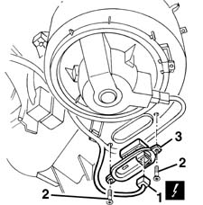

5020A44 heater fan motor resistor - r+r
- Path
- Procedures > 50 AUXILIARY UNITS > 5020 HEATER > 5020A BOX AND COMPONENTS > 5020A44 heater fan motor resistor - r+r
- Kind
- repair procedure (removal / refitting; the operation number is the code)
- Applies to
- all engines; all production periods
- Interactive page
- https://sloeber94.github.io/elrnDB-fMltpl/en/#/2891781
Applies to: all engines; all production periods
 Removing
Removing
 Refitting
Refitting1. Working under the dashboard, disconnect the electrical connection for the electronic transformer.
 | Name | Connector |
|---|---|---|
1 | Air fan adjustment resistance |
2. Undo the bolts.
3. Remove the resistance.

Applies to: all engines; all production periods
Refitting
RemovingCheck that the resistance is not damaged and, if necessary, conduct an electrical test on it (see "Descriptions and Operation").
Refit the resistance.
Tighten the screws.
Connect the electrical connection.
Test the operation of the fan.